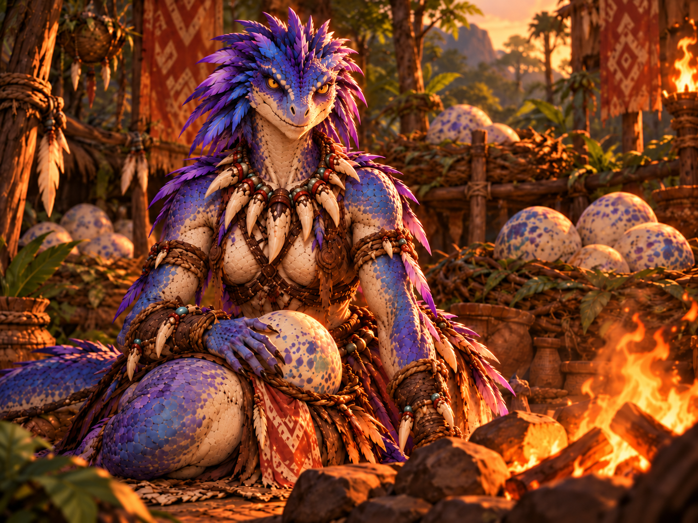

VILLAGGIO SCAGLIAGRIGIA · ZONA DEI NIDI
GUARDIANA DELLA COVATA

PARLA CON LA GUARDIANA
GUARDIANALa lucertoloide ti fissa con occhi duri e protettivi. «Parla in fretta, straniero. La covata viene prima di tutto.»
Dialogo in preparazione: l'intelligenza artificiale della Guardiana non è ancora attiva.
Accanto al focolare, la Guardiana sorveglia i nidi della tribù. Il suo volto non lascia spazio a dubbi: nessun estraneo si avvicina alle uova senza il suo consenso.